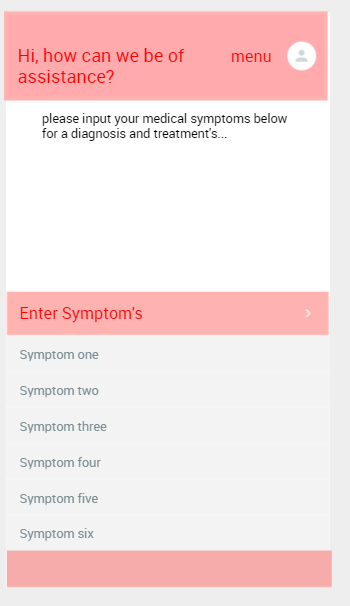
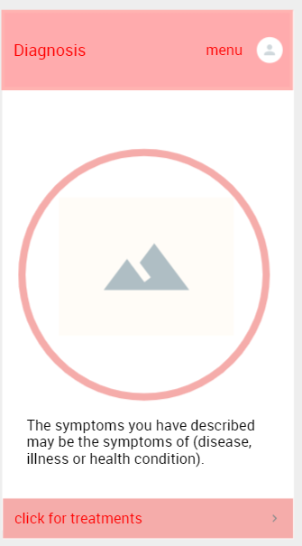
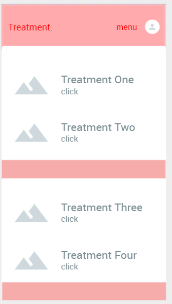
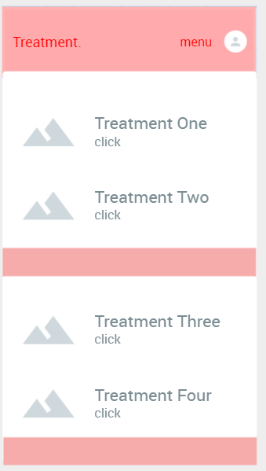

Health diagnoses application interface.
Sign up/ log in screen.
The Sign up/ Log in screen is developed for the user to submit their log in details and set up an account on our cloud databases, the sign-up page will ask for all the essentials on a standard “sign up page”, such as “Email, Account Name, First Name, Last Name”. Furthermore, the application will ask for details about the users for their pre-existing health conditions which the user can input. With this knowledge in our cloud database, we will ensure the security of our users' medical information via various anti-malware software inbuilt into our application. We intend to use file encryption methodology names “file protection” which will secure the privacy of our users' medical history and information.

Home page.
We have designed our interface to be simple and easy to use, with a simple yet pleasing aesthetic look to match with our medical theme. The home page will have multiple items within it such as a user text interface which will ask the user “Please insert your medical symptoms here for diagnosis and treatment.” This is where the user can input any symptoms that they are experiencing, so our artificial intelligence can match the user's input to a diagnosis and furthermore provide adequate treatment. There will be a limit for only six symptoms per diagnosis listed in the below, which the user can place their inputs for our AI to identify and match. The users will also find a “Discussion forum” link on the homepage which will redirect them to a discussion forum to discuss with various medical experts and with the community about symptoms and treatment plans.
Diagnosis page
The diagnosis page will display the name of what illness, disease or medical condition the users are experiencing. Also providing visual aid by providing a large image of the diagnosis. This will be a simple page where the user will be able to identify their illness, disease or medical condition of what the users are experiencing. Located at the bottom of the page will be a link “click for treatments” which will redirect you to the next page and list an array of treatment options and plans.
Treatment page.
The treatment page is the predecessor of the diagnosis page. Here the user will be given an array of medically proven treatments to treat the users “illness, disease or medical condition”. Here the user will be given a row of treatment plans for the users where they can choose for their liking. Each treatment option will be fitted with a link redirecting them to a page where more detail is provided about the treatment such as “what it is, how it works, a method of usage, accompanied by visual aid to reinforce the treatment details.
 

Discussion forum
This is a page located on the home page this page will be a more community based where the user can input a message in relation to either a treatment plan, education or to speak with others in the community who have followed the same medication and treatment plans where “like treatment plans” will be in the “suggested treatments section of the forem”. Once the user message has been sent the user will receive relevant messages from medical experts and community members where they can form their opinionated comments about various treatment plans.

What stage is the project idea up to?
Our team has identified the core features and goals of the application in addition to developing an example user interface. During our research we have decided to use Amazon Web Services as a provider of cloud computing and artificial intelligence services; and we have identified the sources of medical information to be used for diagnoses as user’s medical history, peer-reviewed medical science journals, medical dictionary.
Going forward, as we have outlined the project idea, features, and proposed technologies used, the application will be to be reviewed by skilled software developers to decide which technologies should be used for this program going forward.
Dead-ends or problems that we encountered
A dead-end encountered relating to our technical ability to develop the project. Considering the project is based on artificial intelligence and making an application, we realised we could only develop and plan a list of features and user-interface examples.
Another problem we encountered was scope. We planned to expand the functionalities of the application to include pets as well. However, we realised that this was not essential for now and required far more research time. This may not necessarily be a dead-end, but for now it is something we have decided to delay till completion of the application.
Decisions made about the project
After completing assignment 2 we decided to take some time to think about improvements, changes, or the prospect of changing the project idea completely. We decided that the project idea was valuable and that was only needed to adjust the scope to focus on recording data and diagnosing symptoms.
We distributed tasks so that members would have similar tasks to what they completed in Assignment 2. This allowed for the group to progress more efficiency as they were already experienced in the allocated areas such as website creation or expanding on the project idea. Although we kept similar tasks, we also decided to take a more collaborative approach by brainstorming ideas for delegated assignment tasks before individuals worked on their tasks. This allowed for everyone to understand each other’s work and plan their own accordingly.
What has been changed about the project ?
Two main changes were made to the project which are the decision to complete a user interface example of the application instead of an interactive example. Originally, we planned to make it interactive except we did not realise the expertise required for our type of application is beyond our capabilities. This resulted in us doing our best to our vision of a user-interface example for future developers working on this project.
The other main change was to reduce the focus on the range of additional devices we would incorporate into the beginning stages of the application such as smart pills and fall-safety belts. This was due to realising the most important features would the ability for the application to keep records and its reliance on cloud computing and artificial intelligence. More devices can eventually be added after completion of the application.
What would you want to know if you were one of the people taking over?
Our team lacked the technical ability to make this application, so we focused on the overview, goals and features so that the following team could implement them. If I were to take over the application then I would want to understand that the heart of the application is its ability to use recorded/stored medical information, whether its manually recorded or tracked automatically from a fitness watch and offer a health diagnoses based on described symptoms. We have also provided a user-interface example as a visual explanation of our vision.